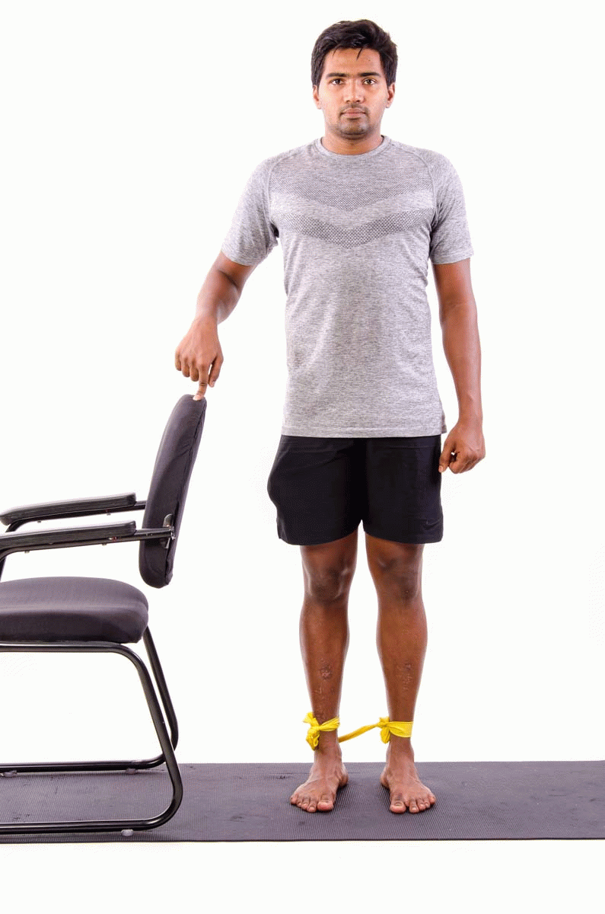

How to do it:
1. Start by wrapping a resistance band around a solid anchor such as a power rack or another piece of equipment that is attached to the floor.
2. Standing with either side of your body facing the anchor point, wrap the band around your inner (working) foot.
3. Adjust the tension of the resistance band by standing farther away from the anchor point or wrapping the band more tightly.
4. Allow the band to pull your leg to the side while resisting the movement.
5. To start the exercise, stand tall and bring your banded leg toward the center of your body, feeling a good contraction in your adductors.
6. lowly release your leg back to the side, with control.
3-4 sets of 8-12 reps
